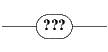
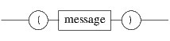
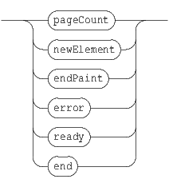

Chapter 16
Plugins
A plugin is an external library that is dynamically loaded when an object that need it is created. The system looks
for plugins in the following locations:
- in the current folder first
- in the PlugIns folder, located in the application bundle on macos, in the application folder on other
systems
- in the system default locations for shared libraries
Additionaly, a user path can be set, where the system will look for plugins in first position. See section 8.5.4
p.66.
The plugins are shared libraries which extension is platform dependent. The plugin name should not
include the extension. The expected extensions are the following: .dylib on MacOS and Linux, .dll on
Windows.
16.1 FAUST plugins
FAUST [Functional Audio Stream]
is a functional programming language specifically designed for real-time signal processing and synthesis. A
FAUST/INScore architecture allows to embed FAUST processors in INScore, for the purpose of signals
computation. A FAUST plugin is viewed as a parallel signal and thus it is created in the signal address space.
Similarly to signals, it is associated to an OSC address in the form /ITL/scene/signal/name where name is a
user defined name.
16.1.1 Set Message
There are two ways to create a FAUST Processor :
16.1.2 Specific messages
A FAUST processor is characterized by the numbers of input and output channels and by a set of parameters. Each
parameter carries a name defined by the FAUST processor. The set of messages supported by a FAUST
processor is the set of signals messages extended with the parameters names and with specific query
messages.
-
-
faustmessage 
- msg is any of the FAUST processor parameters, which are defined by the FAUST processor.
- the get message is extended to query the FAUST processor: in and out give the number of input and
output channels.
EXAMPLE
Querying a FAUST processor input and output count:
/ITL/scene/signal/myFaust get in out;
gives as output:
/ITL/scene/signal/myFaust in 2;
/ITL/scene/signal/myFaust out 4;
Modifying the value of a FAUST processor parameter named volume:
/ITL/scene/signal/myFaust volume 0.8
16.1.3 Feeding and composing FAUST processors
A FAUST processor accepts float values as input, which are taken as interleaved data and distributed to the input
channels.
From composition viewpoint, a FAUST processor is a parallel signal which dimension is the number of
output channels. Thus, a FAUST processor can be used like any parallel signal. However, the signal
identifier defined in 13.1.2 is extended to support adressing single components of parallel signal as
follows:
-
-
signal 
where n selects the signal #n of a parallel signal. Note that indexes start at 0.
EXAMPLE
Creating 3 parallel signals using the 3 output channels of a FAUST processor named myFaust:
/ITL/scene/signal/y1 set ’myFaust/0’ 0.01 0. 1. 1. 1. ;
/ITL/scene/signal/y2 set ’myFaust/1’ 0.01 0.5 1. 1. 1. ;
/ITL/scene/signal/y3 set ’myFaust/2’ 0.01 -0.5 1. 1. 1. ;
16.2 Gesture Follower
INScore supports gesture following using the technology developed by the IRCAM IMTR team. These features are
available as a plugin that is included in the INScore distribution (version 1.03 or greater) or available from the
IRCAM.
16.2.1 Basic principle
Gesture following is provided as a mean to interact with a score. From input viewpoint, the gesture follower is
similar to signals (see section 13.1.1 p.93): it accepts data stream as input both in learning and following modes. It
implements a specific set of events related to gesture following and can generate message streams parametrized
with the gesture follower current state.
A gesture follower is setup to handle a given count of gestures, which are actually denoted by streams of float
vectors. We’ll refer to the size of the float vector as the gesture dimension. For example, the dimension of a gesture
captured from x, y and z accelerometers is 3.
A gesture follower operates in two distinct phases: a learning phase where it actually stores the gestures data, and a
following phase where it tries to match incoming data to the stored gestures data. When not learning nor following,
we’ll talk of an idle phase.
In the following phase, the system maintains a list of likelihood for the learned gestures, a list of positions in the
gestures and a list of speeds representing how fast the gestures are made. Of course, the higher the
likelihood, the more these data are meaningfull. It’s the user responsability to decide on the meaningfull
likelihood threshold value. Interaction events are triggered only in the following phase and for meaningfull
likelihoods.
16.2.2 Messages
A gesture follower is created in a scene using the imtrgf type. It has a graphic appearance that may be used for
debug purpose but it is hidden by default.
-
-
gesturefollower 
The parameters are:
- gesturedimension: the size of the gestures data vector.
- bufsize: the size of the gesture data storage.
- name: a list of names to be used to refer to the learned gestures.
NOTE
A gesture follower is created with a fixed count of gestures that can be learned and decoded. These gestures are
named gestures and can be addressed at /ITL/scene/myfollower/gesturename where the part in italic are
user defined names and where myfollower is a gesture follower.
-
-
gesturefollower 
- [1] input data into the gesture follower. The data are interpreted according to the current operating
mode i.e. learning, following or idle.
- [2] starts to learn the gesture designated by name. Actually records the next input data to the gesture.
- [3] starts following i.e. trying to match the next input data to the recorded gestures.
- [4] stops learning or following. Actually puts the system in idle phase.
- [5] clear all the gestures data. This is equivalent to send the clear message to all the gestures.
- [6] sets the size of the window that contains the history of the likelihoods. May be viewed as how fast
the likelihoods will change.
- [7] sets the follower tolerance.
EXAMPLE
Creating a gesture follower for 3 dimensional data and a typical learning sequence:
/ITL/scene/gf set imtrgf 3 1000 gestureA gestureB gestureC gestureD ;
/ITL/scene/gf learn gestureA ;
/ITL/scene/gf 0.1 0.5 -0.2 ... 0.7; ! the data size must be a multiple of 3
/ITL/scene/gf stop;
16.2.3 Gestures management
Messages can also be sent to gestures i.e. to addresses in the form /ITL/scene/myfollower/gesturename
where myfollower is a gesture follower.
A gesture could be in two states:
- an active state: when its likelihood is greater or equal to the likelihood threshold.
- an idle state: when its likelihood is lower than the likelihood threshold.
-
-
gesture 
- set: sets the gesture data. This is equivalent to learn the corresponding data. The set message could
be used to restored previously saved gesture data.
- clear: clears the gesture data.
- learn: puts the gestures follower in learning mode and starts learning the corresponding gesture.
This is equivalent to send OSClearn gesturename to the parent gesture follower.
- likelihoodThreshold: sets the gesture likelihood threshold. The parameter is a float value in the
range [0,1]. Default value is 0.5.
Gestures supports also specific queries :
-
-
gestureget 
- get: without parameter, returns a set message when the gesture is not empty.
- size: gives the current size of the gesture, actually the number of recorded frames.
16.2.4 Events and interaction
Events are defined at gesture level and events management messages should be addressed to gestures.
-
-
gestureevents 
- gfEnter triggered when the gesture state changes from idle to active.
- gfLeave triggered when the gesture state changes from active to idle.
- gfActive triggered in active state each time the gesture likelihood is refreshed.
- gfIdle triggered in idle state each time the gesture likelihood is refreshed.
A message associated to a gesture supports the following specific variables:
-
-
gesturevariable 
These variables support the scaling feature associated to position variables and described in section 14.2.1
p.117.
- gflikelihood indicates the current likelihood
- gfpos indicates the current position in the gesture
- gfspeed indicates the current gesture execution speed
NOTE
Variables described in section 14.2 p.116 may also be used but they are meaningless and contains default
values.
16.2.5 Gesture Follower Appearance
A gesture follower object has a graphic appearance and supports all the standard objects properties, including
mapping and synchronization. This graphic appearance is provided mainly for debug purpose and
by default, the object is hidden. Figure 16.1 shows the gesture follower appearance in its different
phases:
- when idle, the upper part of the graphic indicates the buffer state of the different gestures. It also
includes the gestures likelihood threshold.
- when learning, a red frame and a grey background indicates that a learning a gesture is currently in
progress. The gesture buffer state is refreshed while learning.
- when following, the upper part indicates each gesture current likelihood and the lower part indicates
the current estimated positions.
16.3 Httpd server plugin
INScore can embed Http server to expose real time screenshot image of a scene to the web. This feature is based on
libmicrohttpd
and is available as a plugin that is included in the INScore distribution (version 1.11 or greater). The Url to get the
image is the base url of the server.
16.3.1 Set Message
The http server object is created in a scene like other objects and served image of his scene.
-
-
httpdserver 
- port http port used by the server.
EXAMPLE
/ITL/scene/server set httpd 8000;
NOTE
If the http port is already used, the server cannot start.
16.3.2 Specific messages
The http server status can be delivered with a specific message.
-
-
httpdmessage 
A string corresponding to the server status ("started" or "stopped") is return.
EXAMPLE
/ITL/scene/server get status;